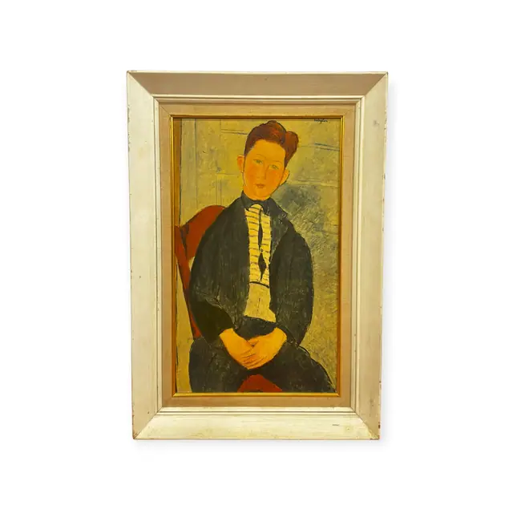
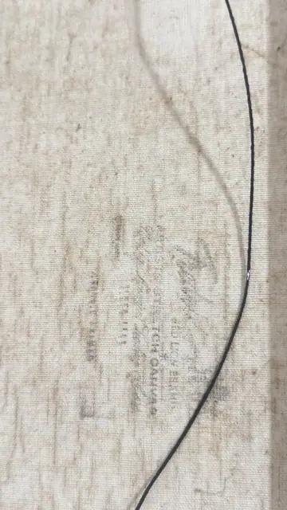
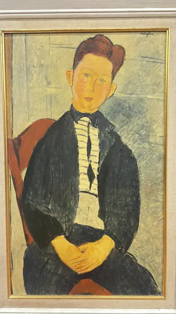
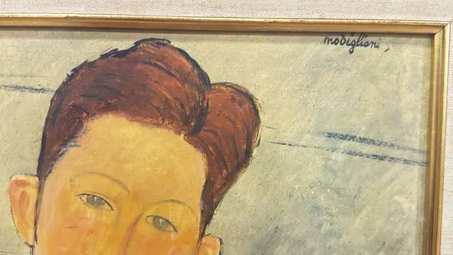

Paintings & Prints
Portrait of a Seated Young Man after Modigliani, Signed, Framed
· 20th century
Price Upon Request




About the Item
An elongated, almond-eyed figure in the manner of Modigliani, seated with hands folded, wearing a dark jacket over a vertically striped shirt. The background is a flat ochre wall broken by faint incised lines. The palette is warm and restrained: mustard, brick red, black and cream. Presented in a wide off-white painted moulding with a thin gilt inner lip. Medium: oil on canvas. Signed upper right of the canvas, reading "modigliani". Inscribed on the reverse or mount: faint printed canvas-maker stamp on the reverse, illegible; retail price tag on the frame reading $439. Condition: surface appears sound; some glare in the photographs.
Details
- Creation Year:
- 20th century
- Dimensions:
- Height: 30.0 in (76.2 cm)
Width: 24.0 in (60.96 cm)
outside of frame - Medium:
- oil on canvas
- Period:
- 20Th
- Condition:
- Offered in the condition shown in the photographs.
- Reference Number:
- VO-228
- Documentation:
- none seen
- Gallery Location:
- faint printed canvas-maker stamp on the reverse, illegible; retail price tag on the frame reading $439